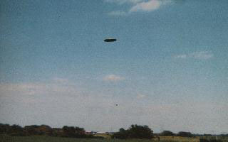

Photographie en juin au Canada

En Espagne, A la tombée du jour un ovni a été vu hier à la
verticale de Lugo. It was parked et émanait une grande luminosité, de tonalité rougeâtre Ideal Gallego, 10 juin 1973 < StratoCat.
En Espagne, le matin de dimanche le gens étaient nombreux à
observer dans la région de Cebaña un objet circulaire brillant, totalement immobile. Les appels au local
transmitter, ainsi qu'aux autres centres furent nombreux, de la part de voisins inquiets de la présence de cet objet
volant. A midi il disparût pour se retrouver plus tard dans la région de Ventoso. L'objet était circulaire, avec 2
aires et émanait une lumière puissante. Il fut remarqué à sa base comme des pattes. Tout l'appareil était couvert
d'une espèce de voile bleuâtre. Diverses conjectures ont eu lieu sur la présence de cet objet volant aux
caractéristiques semblables qui était situé au-dessus de la ville de Lugo l'après-midi de samedi"El Domingo Un OVNI El Ferrol", Ideal Gallego, 11 juin 1973 < StratoCat.
En Espagne, les observations des jours précédents sont
expliquées par un ballon de polyethylène transparent, de forme inhabituelle, d'un diamètre approximatif de 40 m, et
d'une longueur de 120 m StratoCat.